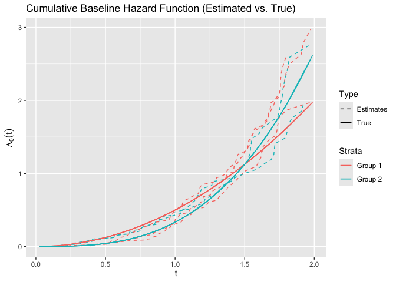

The goal of survtrans is to provide a framework for transferring survival information from source domain(s) to target domain. The package now only supports the Cox proportional hazards model with global and local transfer learning.
Installation
You can install the development version of survtrans like so:
# install.packages("pak")
pak::pak("SignorinoY/survtrans")Example
This is a basic example which shows you how to transfer survival information from multiple source domains to a target domain using the Cox proportional hazards model:
library(survtrans)
formula <- survival::Surv(time, status) ~ . - group - id
fit <- coxtrans(
formula, sim2, sim2$group,
lambda1 = 0.03, lambda2 = 0.01, lambda3 = 0.01, penalty = "SCAD"
)
summary(fit)
#> Call:
#> coxtrans(formula = formula, data = sim2, group = sim2$group,
#> lambda1 = 0.03, lambda2 = 0.01, lambda3 = 0.01, penalty = "SCAD")
#>
#> n=500, number of events=422
#>
#> coef exp(coef) se(coef) z Pr(>|z|)
#> X1 (1) 0.34792 1.41612 0.05130 6.781 1.19e-11 ***
#> X1 (2, 4) 0.94905 2.58324 0.08576 11.066 < 2e-16 ***
#> X1 (3, 5) -0.25320 0.77631 0.06888 -3.676 0.000237 ***
#> X2 (1) 0.36097 1.43472 0.05370 6.722 1.79e-11 ***
#> X2 (2, 4) 0.96453 2.62354 0.08449 11.415 < 2e-16 ***
#> X2 (3, 5) -0.24258 0.78460 0.08020 -3.025 0.002488 **
#> X3 (ALL) 0.34501 1.41200 0.05541 6.227 4.76e-10 ***
#> X4 (ALL) 0.32763 1.38767 0.05335 6.141 8.22e-10 ***
#> ---
#> Signif. codes: 0 '***' 0.001 '**' 0.01 '*' 0.05 '.' 0.1 ' ' 1
#> exp(coef) exp(-coef) lower .95 upper .95
#> X1 (1) 1.4161 0.7062 1.2806 1.5659
#> X1 (2, 4) 2.5832 0.3871 2.1836 3.0561
#> X1 (3, 5) 0.7763 1.2881 0.6783 0.8885
#> X2 (1) 1.4347 0.6970 1.2914 1.5940
#> X2 (2, 4) 2.6235 0.3812 2.2231 3.0961
#> X2 (3, 5) 0.7846 1.2745 0.6705 0.9181
#> X3 (ALL) 1.4120 0.7082 1.2667 1.5740
#> X4 (ALL) 1.3877 0.7206 1.2499 1.5406We can also give the estimated cumulative hazard function as follows:
library(ggplot2)
basehaz_pred <- basehaz(fit)
basehaz_pred$color <- ifelse(as.numeric(basehaz_pred$strata) %% 2 == 0, "Group 2", "Group 1")
ggplot(basehaz_pred, aes(x = time, y = basehaz, group = strata, color = factor(color), linetype = "Estimates")) +
geom_line() +
geom_line(aes(x = time, y = time^2 / 2, color = "Group 1", linetype = "True")) +
geom_line(aes(x = time, y = time^3 / 3, color = "Group 2", linetype = "True")) +
labs(
title = "Cumulative Baseline Hazard Function (Estimated vs. True)",
x = expression(t),
y = expression(Lambda[0](t))
) +
scale_linetype_manual(values = c("Estimates" = "dashed", "True" = "solid")) +
guides(color = guide_legend(title = "Strata"), linetype = guide_legend(title = "Type"))